第 8 章 形态学操作#
本章解决：二值形状的"胖瘦"由谁说了算——腐蚀（erosion）让前景沿边界向内收缩，毛刺、小噪点被直接吃掉；膨胀（dilation）让前景向外扩张，断裂和小缝被连上。这两个操作是全部形态学运算的原子操作：开运算（先腐蚀后膨胀）负责去噪与分离粘连，闭运算（先膨胀后腐蚀）负责填孔与连接前景；形态学梯度提取前景边缘，顶帽运算提取比背景亮的小块，黑帽运算提取比背景暗的小块。所有操作共用一套参数：结构元（核）、锚点、迭代次数与边界样式。
运行环境约定
本章代码引用本目录根下的素材，路径写作相对路径。运行时工作目录需为 数字图像处理-python 根目录，否则 imread 返回 None。原书用 erode.bmp、dilation.bmp、opening.bmp、opening2.bmp、closing.bmp、closing2.bmp、gradient.bmp、tophat.bmp、blackhat.bmp、kernel.bmp、lena.bmp 等随书资源演示，素材目录里没有这些文件，本章统一换成：picture7.png（黑底白色字母 J，顶替 erode、dilation、gradient、tophat、blackhat 等黑底二值演示图）、picture9.jpg（黑底三个白矩形，顶替 opening、closing、kernel）、picture13.jpg（硬币阵列，顶替 opening2、closing2）、picture1.jpg 灰度读入顶替 lena。素材图形与原书不同，腐蚀、膨胀的具体效果会随素材变化，但代码逻辑与参数一字未改。另外，跟随代码 ipynb 里用的 cv_show 是未给出定义的辅助函数，运行 ipynb 前先补一句 def cv_show(name, img): cv2.imshow(name, img); cv2.waitKey()。
8.0 本章导图#
8.1 腐蚀#
形态学，即数学形态学（Mathematical Morphology），主要从图像内提取分量信息——这类信息对表达和描绘图像的形状有重要意义，是图像理解时最本质的形状特征。典型用法：识别手写数字时，先用形态学运算得到骨架，识别时只针对骨架运算即可。形态学处理在视觉检测、文字识别、医学图像处理、图像压缩编码等领域应用广泛。
腐蚀（erosion）是最基本的形态学操作之一，它能够将图像的边界点消除，使图像沿着边界向内收缩，也可以把小于指定结构元（structuring element）的部分去除。腐蚀用来"收缩"或者"细化"二值图像中的前景（foreground），借此实现去除噪声、元素分割等功能。
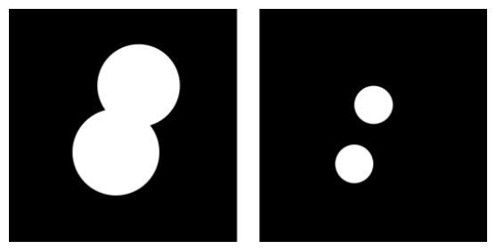
腐蚀过程中，通常使用一个结构元来逐个像素地扫描要被腐蚀的图像，并根据结构元和被腐蚀图像的关系，来确定腐蚀结果中对应位置像素点的值。
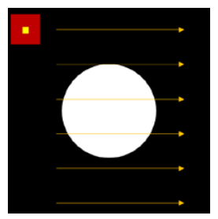
注意：形态学操作是逐个像素地决定值的，每次判定的点都是与结构元中心点所对应的点。图 8.3 给出结构元与前景色的两种关系，腐蚀结果由这两种关系决定：
- 如果结构元完全处于前景图像中（左图），就把结构元中心点所对应的腐蚀结果图像中的像素点处理为前景色（白色，像素值为 1）；
- 如果结构元未完全处于前景图像中（可能部分在，也可能完全不在，右图），就把该点处理为背景色（黑色，像素值为 0）。
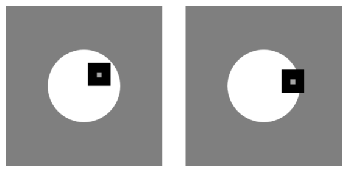
针对图 8.3 的图像，腐蚀的结果就是前景白色圆的直径变小。结构元也被称为核（kernel）。
例如，有待腐蚀的图像 img（1 表示白色前景，0 表示黑色背景）和结构元 kernel：
用 kernel 对 img 腐蚀，得到结果 rst：
原因：核 kernel 在 img 内逐个像素遍历时，只有核中心 kernel[1,0] 位于 img[2,1]、img[2,2]、img[2,3] 这三处时，核才完全处于前景图像中。所以 rst 里只有这三个点为 1，其余全为 0。
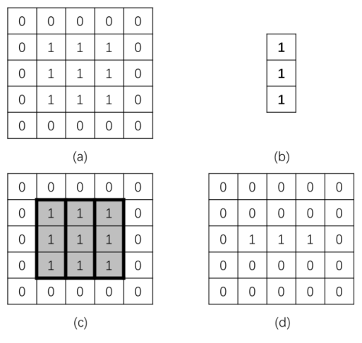
cv2.erode 函数#
在 OpenCV 中，使用函数 cv2.erode() 实现腐蚀操作，语法格式为：
- dst：腐蚀后输出的目标图像，与原始图像具有同样的类型和大小。
- src：需要腐蚀的原始图像，通道数任意，但图像深度必须是 CV_8U、CV_16U、CV_16S、CV_32F、CV_64F 中的一种。
- kernel：腐蚀操作所采用的结构元（核），可以自定义生成，也可以用函数
cv2.getStructuringElement()生成。 - anchor：核中锚点（anchor）的位置，默认 (-1,-1)，即核的中心。
- iterations：腐蚀操作迭代的次数，默认 1，即只进行一次。
- borderType：边界样式，一般采用默认值 BORDER_CONSTANT，可选值见表 8-1。
- borderValue：边界值，一般采用默认值。C++ 中有函数
morphologyDefaultBorderValue()返回腐蚀和膨胀的"魔力（magic）"边界值，Python 不支持该函数。
表 8-1 borderType 值
| 类型 | 说明 |
|---|---|
| cv2.BORDER_CONSTANT | iiiiii|abcdefgh|iiiiiii，用特定值 i 填充 |
| cv2.BORDER_REPLICATE | aaaaaa|abcdefgh|hhhhhhh，复制边界像素 |
| cv2.BORDER_REFLECT | fedcba|abcdefgh|hgfedcb，含边界的镜像 |
| cv2.BORDER_WRAP | cdefgh|abcdefgh|abcdefg，环绕填充 |
| cv2.BORDER_REFLECT_101 | gfedcb|abcdefgh|gfedcba，不含边界的镜像 |
| cv2.BORDER_TRANSPARENT | uvwxyz|absdefgh|ijklmno，透明边界 |
| cv2.BORDER_REFLECT101 | 与 BORDER_REFLECT_101 相同 |
| cv2.BORDER_DEFAULT | 与 BORDER_REFLECT_101 相同 |
| cv2.BORDER_ISOLATED | 不考虑 ROI（Region of Interest，感兴趣区域）之外的区域 |
拓展：魔力边界值
腐蚀在图像边界处取"邻域最小值"，边界外没有像素怎么办？OpenCV 的默认做法是：腐蚀时把边界当 +∞（永远不会成为最小值），膨胀时把边界当 −∞（永远不会成为最大值），这就是"魔力（magic）"边界值。实测（cv2 4.13）：7×7 图中央放 3×3 白块，用 3×3 全 1 核腐蚀只得到中心 1 个像素、膨胀扩散成 5×5；整幅全白的图腐蚀后仍是全白——边界不会"莫须有"地把前景吃掉，也不会把外部值膨胀进来。
【例 8.1】使用数组演示腐蚀的基本原理。
# ===== 8.1 例 8.1：数组上的腐蚀 =====
import cv2
import numpy as np
img = np.zeros((5, 5), np.uint8) # 5×5 全 0 数组，模拟黑色背景
img[1:4, 1:4] = 1 # 第 1~3 行、第 1~3 列置 1，成 3×3 白色方块
kernel = np.ones((3, 1), np.uint8) # 3 行 1 列的竖直核，锚点默认在 kernel[1,0]
erosion = cv2.erode(img, kernel) # 腐蚀：核完全落入前景才输出 1
print("img=\n", img)
print("kernel=\n", kernel)
print("erosion=\n", erosion)
运行程序，结果如下：
img=
[[0 0 0 0 0]
[0 1 1 1 0]
[0 1 1 1 0]
[0 1 1 1 0]
[0 0 0 0 0]]
kernel=
[[1]
[1]
[1]]
erosion=
[[0 0 0 0 0]
[0 0 0 0 0]
[0 1 1 1 0]
[0 0 0 0 0]
[0 0 0 0 0]]
只有当核中心位于 img[2,1]、img[2,2]、img[2,3] 时核才完全落入前景，所以结果里只有这三个点为 1。实测（cv2 4.13、numpy 2.2.6）输出与原书逐元素一致。
【例 8.2】使用函数 cv2.erode() 完成图像腐蚀。
# ===== 8.1 例 8.2：真实图像的腐蚀 =====
import cv2
import numpy as np
o = cv2.imread("picture7.png", 0) # 灰度读入黑底白 J（原书 erode.bmp）
kernel = np.ones((5, 5), np.uint8) # 5×5 全 1 核，即图 8.5 的自定义核
erosion = cv2.erode(o, kernel) # 用 5×5 核腐蚀一次
cv2.imshow("orriginal", o) # 原图
cv2.imshow("erosion", erosion) # 腐蚀结果
cv2.waitKey()
cv2.destroyAllWindows()
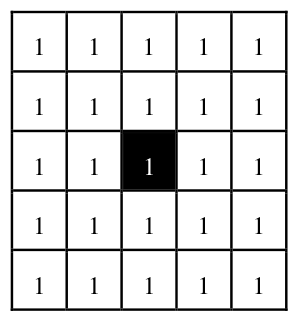
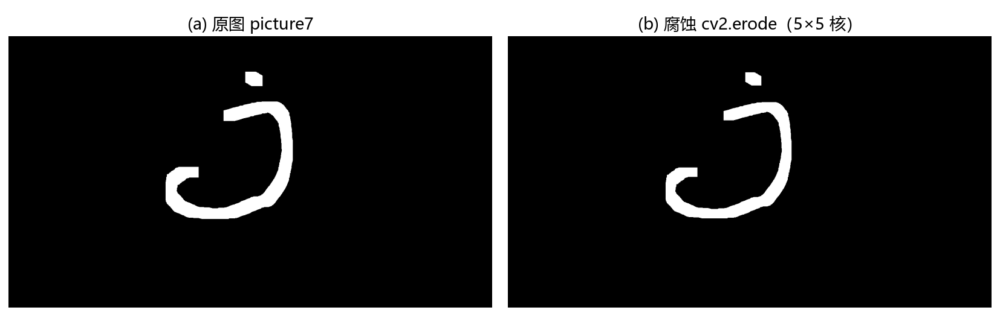
从图 8.6 可以看到，腐蚀操作将原始图像内字母 j 笔画边缘的毛刺腐蚀掉了，笔画整体变细，上方的墨点也缩小了一圈。
【例 8.3】调节函数 cv2.erode() 的参数，观察不同参数控制下的图像腐蚀效果。
# ===== 8.1 例 8.3：调大核 + 多次迭代 =====
import cv2
import numpy as np
o = cv2.imread("picture7.png", 0) # 灰度读入（原书 erode.bmp）
kernel = np.ones((9, 9), np.uint8) # 参数调整一：核换成 9×9
erosion = cv2.erode(o, kernel, iterations=5) # 参数调整二：迭代 5 次
cv2.imshow("orriginal", o)
cv2.imshow("erosion", erosion)
cv2.waitKey()
cv2.destroyAllWindows()
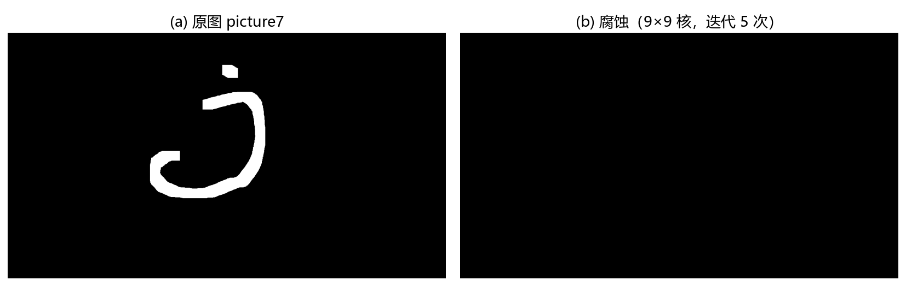
本例做了两个调整：核的尺寸变为 9×9；iterations=5 让腐蚀重复 5 次。图像被腐蚀得更严重——前景持续收缩，细小结构直接消失：实测 picture7 的白色前景像素从 41 726 个收缩到 0，整个字母 j 被吃光。核越大、迭代越多，腐蚀越猛，二者可以互相叠加。
拓展：灰度图上的腐蚀就是邻域最小值
"核完全落入前景"是二值图的集合规则。图像不是二值时，OpenCV 按灰度形态学处理：腐蚀 = 核覆盖区内的最小值，膨胀 = 最大值；彩色图逐通道独立进行。实测：把 0/255 二值数组交给 cv2.erode，结果与手工逐点取邻域最小值完全一致。所以灰度图的腐蚀会把"亮区"收缩——只要记住 OpenCV 形态学里亮值是前景，二值与灰度的规则就统一了。
8.2 膨胀#
膨胀（dilation）操作是形态学中另一种基本操作，作用与腐蚀相反：能对图像的边界进行扩张。膨胀将与当前对象（前景）接触到的背景点合并到当前对象内，从而把边界点向外推。如果两个对象的距离较近，膨胀过程中它们可能连通在一起。膨胀对填补图像分割后图像内所存在的空白相当有帮助。
同腐蚀一样，膨胀也使用一个结构元逐个像素地扫描待膨胀图像，并根据结构元与待膨胀图像的关系来确定膨胀结果。
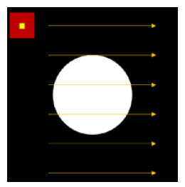
图 8.10 给出结构元与前景色的两种关系，判定规则：
- 如果结构元中任意一点处于前景图像中，就将膨胀结果中对应像素点处理为前景色；
- 如果结构元与前景完全无重合（完全落在背景里），就将该点处理为背景色。
原书笔误：膨胀的第二条判定规则
原书写"如果结构元完全处于背景图像外，就将膨胀结果图像中对应像素点处理为背景色"。"处于背景图像外"应为其反：结构元完全处于背景图像内（与前景无任何重合）时才输出背景色。原书图 8.11 的说明（"当 kernel 与前景对象完全无重合时，其中心点对应的膨胀结果图像内像素点的值为 0"）与例 8.4 的运行结果都印证了这一点。
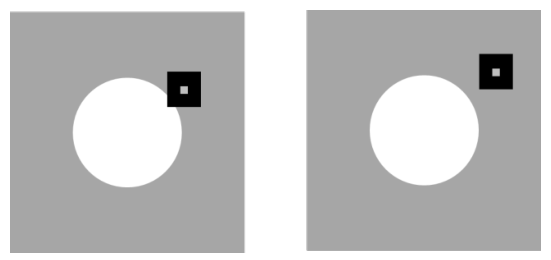
针对图 8.10 的图像，膨胀的结果就是前景白色圆的直径变大。
例如，有待膨胀的图像 img 和结构元 kernel（与 8.1 节同一个 3×1 竖直核）：
膨胀结果 rst：
原因：核在 img 内遍历时，只要核中心位于 img[1,1]、img[1,2]、img[1,3]、img[2,1]、img[2,2]、img[2,3]、img[3,1]、img[3,2] 或 img[3,3] 这 9 处中的任意一处，核内就存在与前景重合的像素点。这 9 个点在结果中被置 1，其余为 0——一行前景被"撑"成了 3 行。
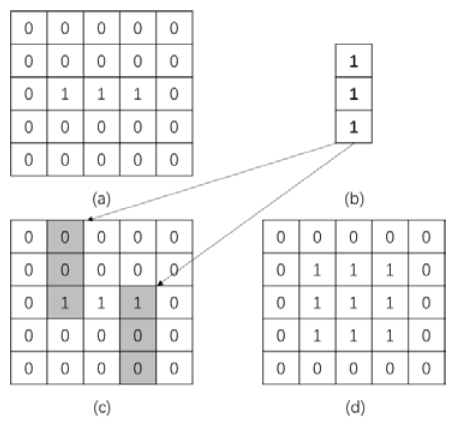
cv2.dilate 函数#
在 OpenCV 内，采用函数 cv2.dilate() 实现膨胀操作，语法结构为：
- dst：膨胀后输出的目标图像，与原始图像具有同样的类型和大小。
- src：需要膨胀的原始图像，通道数任意，但深度必须是 CV_8U、CV_16U、CV_16S、CV_32F、CV_64F 中的一种。
- kernel：膨胀操作所采用的结构元，可以自定义生成，也可以用
cv2.getStructuringElement()生成。
参数 anchor、iterations、borderType、borderValue 与函数 cv2.erode() 内相应参数的含义一致。
【例 8.4】使用数组演示膨胀的基本原理。
# ===== 8.2 例 8.4：数组上的膨胀 =====
import cv2
import numpy as np
img = np.zeros((5, 5), np.uint8) # 5×5 全 0 数组
img[2:3, 1:4] = 1 # 仅第 2 行、第 1~3 列置 1：一行白色前景
kernel = np.ones((3, 1), np.uint8) # 3 行 1 列竖直核
dilation = cv2.dilate(img, kernel) # 膨胀：核碰到前景就输出 1
print("img=\n", img)
print("kernel=\n", kernel)
print("dilation\n", dilation)
运行程序，结果如下：
img=
[[0 0 0 0 0]
[0 0 0 0 0]
[0 1 1 1 0]
[0 0 0 0 0]
[0 0 0 0 0]]
kernel=
[[1]
[1]
[1]]
dilation
[[0 0 0 0 0]
[0 1 1 1 0]
[0 1 1 1 0]
[0 1 1 1 0]
[0 0 0 0 0]]
只要核的任意一点处于前景图像中，当前中心点对应的输出像素就被置 1。实测输出与原书一致。
【例 8.5】使用函数 cv2.dilate() 完成图像膨胀操作。
# ===== 8.2 例 8.5：真实图像的膨胀 =====
import cv2
import numpy as np
o = cv2.imread("picture7.png", 0) # 灰度读入黑底白 J（原书 dilation.bmp）
kernel = np.ones((9, 9), np.uint8) # 9×9 全 1 核
dilation = cv2.dilate(o, kernel) # 膨胀一次
cv2.imshow("original", o)
cv2.imshow("dilation", dilation)
cv2.waitKey()
cv2.destroyAllWindows()
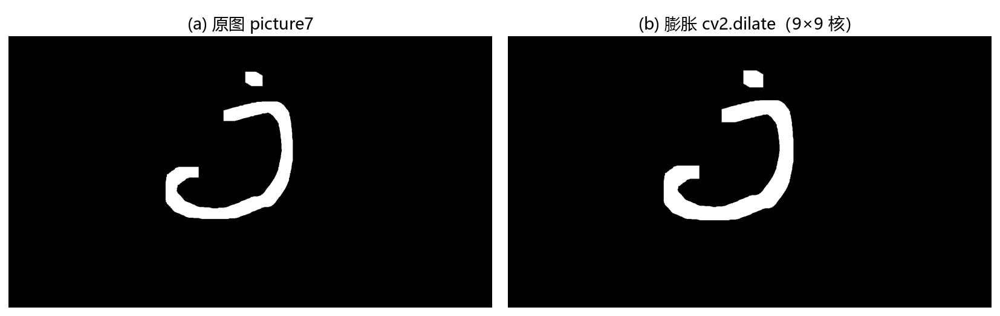
膨胀操作将原始图像"变粗"了：白色前景像素从 41 726 个涨到 52 185 个。
【例 8.6】调节函数 cv2.dilate() 的参数，观察不同参数控制下的图像膨胀效果。
# ===== 8.2 例 8.6：小核 + 多次迭代 =====
import cv2
import numpy as np
o = cv2.imread("picture7.png", 0) # 灰度读入（原书 dilation.bmp）
kernel = np.ones((5, 5), np.uint8) # 核改为 5×5
dilation = cv2.dilate(o, kernel, iterations=9) # 膨胀重复 9 次
cv2.imshow("original", o)
cv2.imshow("dilation", dilation)
cv2.waitKey()
cv2.destroyAllWindows()
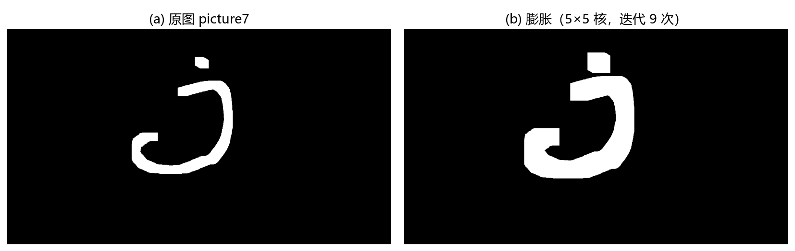
核变小了，但重复 9 次，图像被膨胀得更严重——前景实现了"生长"：白色前景像素从 41 726 个涨到 90 572 个。
拓展：腐蚀与膨胀互为对偶
对偶性（duality）：对前景做腐蚀，等价于先对整幅图取反、对背景做膨胀、再取反——\(255 - \text{dilate}(255 - A) = \text{erode}(A)\)，把 erode 与 dilate 互换同样成立（实测 cv2 4.13 上逐像素相等，含边界）。这就是"OpenCV 把亮值当前景"的数学根源：想腐蚀暗色物体（白底黑字），必须先取反变成黑底白字再动手，否则"腐蚀"收缩的是白色背景。
8.3 通用形态学函数#
腐蚀和膨胀是形态学运算的基础，把二者组合，就能得到开运算、闭运算（关运算）、形态学梯度（Morphological Gradient）运算、礼帽运算（顶帽运算）、黑帽运算、击中击不中等多种不同形式的运算。
OpenCV 提供函数 cv2.morphologyEx() 实现上述形态学运算，语法结构如下：
- dst：经过形态学处理后输出的目标图像，与原始图像具有同样的类型和大小。
- src：需要形态学操作的原始图像，通道数任意，但深度必须是 CV_8U、CV_16U、CV_16S、CV_32F、CV_64F 中的一种。
- op：操作类型，见表 8-2。各种运算的操作规则都是将腐蚀和膨胀进行组合而得到的。
- kernel、anchor、iterations、borderType、borderValue：与函数
cv2.erode()内相应参数的含义一致。
表 8-2 op 类型
| 类型 | 中文 | 含义 | 操作 |
|---|---|---|---|
| cv2.MORPH_ERODE | 腐蚀 | 腐蚀 | erode(src) |
| cv2.MORPH_DILATE | 膨胀 | 膨胀 | dilate(src) |
| cv2.MORPH_OPEN | 开运算 | 先腐蚀后膨胀 | dilate(erode(src)) |
| cv2.MORPH_CLOSE | 闭运算 | 先膨胀后腐蚀 | erode(dilate(src)) |
| cv2.MORPH_GRADIENT | 形态学梯度运算 | 膨胀图减腐蚀图 | dilate(src) − erode(src) |
| cv2.MORPH_TOPHAT | 顶帽运算 | 原始图像减开运算所得图像 | src − open(src) |
| cv2.MORPH_BLACKHAT | 黑帽运算 | 闭运算所得图像减原始图像 | close(src) − src |
| cv2.MORPH_HITMISS | 击中击不中 | 前景背景腐蚀运算的交集，仅支持 CV_8UC1 二进制图像 | intersection(erode(src), erode(srcᶜ)) |
用标准记号表达（\(A\) 为图像，\(B\) 为结构元，\(\ominus\) 为腐蚀、\(\oplus\) 为膨胀）：开运算与闭运算分别为
本节其余组合都是这两个式子的加减变形。实测（cv2 4.13，随机 0/255 数组 + 5×5 核）：MORPH_OPEN 的输出与 dilate(erode(src)) 逐像素相等，CLOSE、GRADIENT、TOPHAT、BLACKHAT 四种 op 的组合关系也全部逐像素验证通过。
同一幅二值图能把表 8-2 全部八种 op 的差异一眼看全：把 picture13 灰度化后用 OTSU 阈值二值化（硬币为白前景），换 15×15 核把八种 op 逐个跑一遍：
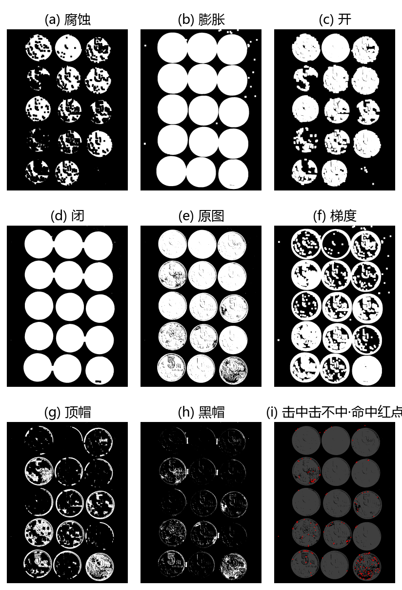
九宫格里能直接读出各 op 的分工：(a) 腐蚀收缩前景、(b) 膨胀撑大并粘连相邻硬币、© 开抹平亮斑、(d) 闭填平暗纹并把断开处连上、(f) 梯度只留轮廓、(g) 顶帽留下被开运算去掉的亮结构、(h) 黑帽留下被闭运算填掉的暗结构。
拓展：击中击不中变换（Hit-or-Miss Transform）
击中击不中不做"收缩/扩张"，而是拿核当模板匹配形状：核里可以写三种值——1 表示该位置必须是前景，−1 表示该位置必须是背景，0 表示无所谓。输出图在"前景背景同时命中"的位置置 1。典型用途：检测角点、孤立点等特定形状，也是细化、骨架提取类算法的基础。两个限制（实测 cv2 4.13）：输入仅支持 CV_8UC1 单通道 8 位图，传 3 通道直接断言报错；核里的 −1 用 np.int8 存（uint8 装不下负数）。例如孤立点检测核 np.array([[-1,-1,-1],[-1,1,-1],[-1,-1,-1]], np.int8)，实测只留下周围没有邻居的白点。
8.4 开运算#
开运算（opening）进行的操作是先将图像腐蚀，再对腐蚀的结果进行膨胀。开运算可以用于去噪、计数等。
去噪的原理：小于核的白色噪点在腐蚀阶段被整体消灭，大块前景只是暂时收缩；随后的膨胀把大块前景撑回原大小，噪点却回不来了。
开运算还可以用于计数。在对图 8.15 中的区域进行计数前，可以利用开运算把连接在一起的不同区域划分开：细连接在腐蚀阶段断开，膨胀阶段各部分各自复原。
通过将函数 cv2.morphologyEx() 中操作类型参数 op 设置为 cv2.MORPH_OPEN，可以实现开运算：
【例 8.7】使用函数 cv2.morphologyEx() 实现开运算。
# ===== 8.4 例 8.7：开运算 =====
import cv2
import numpy as np
img1 = cv2.imread("picture9.jpg") # 黑底白矩形（原书 opening.bmp）
img2 = cv2.imread("picture13.jpg") # 硬币阵列（原书 opening2.bmp）
k = np.ones((10, 10), np.uint8) # 10×10 全 1 核
r1 = cv2.morphologyEx(img1, cv2.MORPH_OPEN, k) # img1 开运算：去小噪点
r2 = cv2.morphologyEx(img2, cv2.MORPH_OPEN, k) # img2 开运算：分离粘连区域
cv2.imshow("img1", img1)
cv2.imshow("result1", r1)
cv2.imshow("img2", img2)
cv2.imshow("result2", r2)
cv2.waitKey()
cv2.destroyAllWindows()
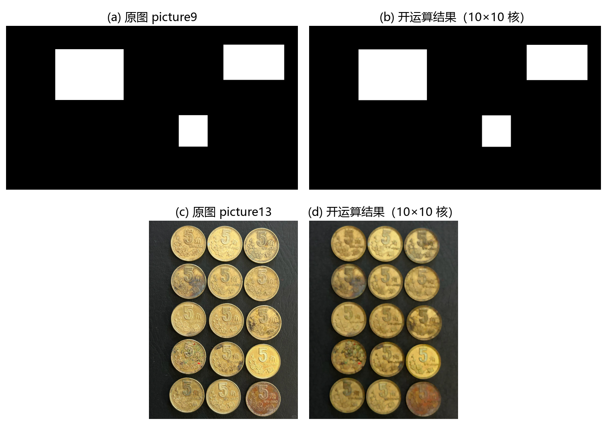
实测验证：在 0/255 数组上放一个 15×15 白方块和三个孤立白点，用 3×3 核做开运算——三个白点全部消失，方块区域逐像素原样保留。开运算"去小留大"的效果与手算规则完全一致。
拓展：开、闭运算都是幂等的
幂等性（idempotence）：开运算做一次就到位，再做一次结果不变——\(\text{open}(\text{open}(A)) = \text{open}(A)\)，闭运算同理（实测成立）。想让开运算更"用力"，正确做法是加大核。另注意 OpenCV 对 morphologyEx 的 iterations 的处理：对 OPEN 是"腐蚀迭代 i 次 + 膨胀迭代 i 次"（实测 iterations=2 与 erode 两次再 dilate 两次的结果逐像素相等），效果约等于换用更大的核，而不是把整个开运算重复 i 遍。
8.5 闭运算#
闭运算（closing）是先膨胀、后腐蚀的运算。它有助于关闭前景物体内部的小孔，或去除物体上的小黑点，还可以将不同的前景图像进行连接。
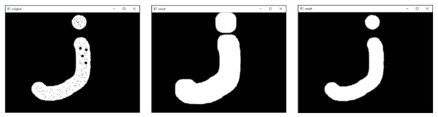
填洞的原理：膨胀阶段，小于核的黑色小孔被周围的前景"淹没"；随后的腐蚀把前景边缘缩回来，小孔却已经被填上了。
闭运算还可以实现前景图像的连接。图 8.18 中，原本独立的两部分前景在膨胀阶段被连成一片，腐蚀阶段恢复边缘，连接保留下来。
通过将函数 cv2.morphologyEx() 中操作类型参数 op 设置为 cv2.MORPH_CLOSE，可以实现闭运算：
【例 8.8】使用函数 cv2.morphologyEx() 实现闭运算。
# ===== 8.5 例 8.8：闭运算 =====
import cv2
import numpy as np
img1 = cv2.imread("picture9.jpg") # 黑底白矩形（原书 closing.bmp）
img2 = cv2.imread("picture13.jpg") # 硬币阵列（原书 closing2.bmp）
k = np.ones((10, 10), np.uint8) # 10×10 全 1 核
r1 = cv2.morphologyEx(img1, cv2.MORPH_CLOSE, k, iterations=3) # img1 闭运算，迭代 3 次
r2 = cv2.morphologyEx(img2, cv2.MORPH_CLOSE, k, iterations=3) # img2 闭运算，迭代 3 次
cv2.imshow("img1", img1)
cv2.imshow("result1", r1)
cv2.imshow("img2", img2)
cv2.imshow("result2", r2)
cv2.waitKey()
cv2.destroyAllWindows()
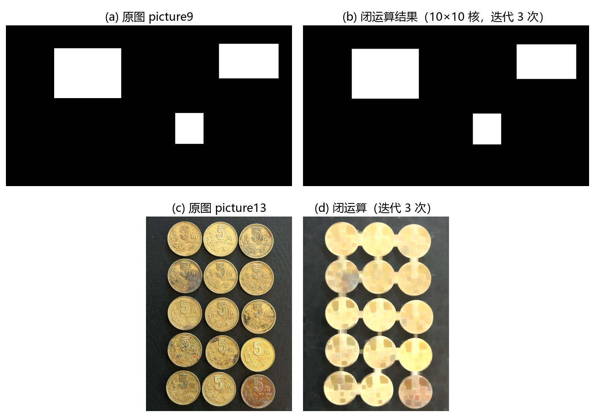
实测验证：在 0/255 数组上放一个 20×20 白方块，内部挖 3×3 小孔、8×8 大孔各一个，用 5×5 核做闭运算——3×3 小孔被完全填上，8×8 大孔原样保留。闭运算只填"小于核"的洞。
8.6 形态学梯度运算#
形态学梯度（morphological gradient）运算是用图像的膨胀图像减腐蚀图像的操作，该操作可以获取原始图像中前景图像的边缘。
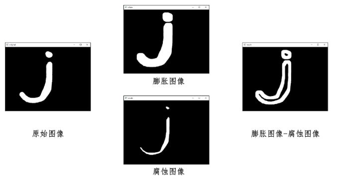
膨胀图把前景向外扩了一圈，腐蚀图把前景向内缩了一圈，两者相减：内部相互抵消归零，剩下的正是内外两层边界之间的"环"——前景的边缘。
通过将函数 cv2.morphologyEx() 的操作类型参数 op 设置为 cv2.MORPH_GRADIENT，可以实现形态学梯度运算：
【例 8.9】使用函数 cv2.morphologyEx() 实现形态学梯度运算。
# ===== 8.6 例 8.9：形态学梯度 =====
import cv2
import numpy as np
o = cv2.imread("picture7.png", 0) # 灰度读入（原书 gradient.bmp）
k = np.ones((5, 5), np.uint8) # 5×5 全 1 核
r = cv2.morphologyEx(o, cv2.MORPH_GRADIENT, k) # 膨胀图 − 腐蚀图
cv2.imshow("original", o)
cv2.imshow("result", r)
cv2.waitKey()
cv2.destroyAllWindows()
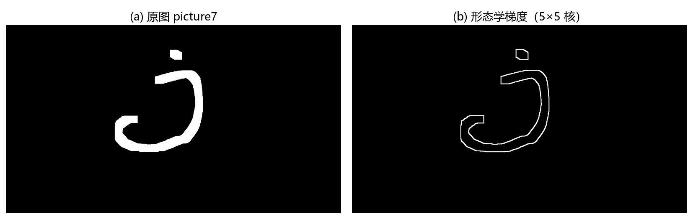
实测验证：随机 0/255 数组上，MORPH_GRADIENT 的输出与 dilate(src) − erode(src) 逐像素相等。
拓展：标准梯度、内梯度与外梯度
上面的 MORPH_GRADIENT 是标准梯度（standard gradient），边缘最粗。另有两个变体：内梯度（internal gradient）= 原图 − 腐蚀图，边缘贴着前景内侧；外梯度（external gradient）= 膨胀图 − 原图，边缘贴着前景外侧。三者满足"标准梯度 = 内梯度 + 外梯度"（实测逐像素成立）。只要边缘轮廓、不要前景内部时，内外梯度给出的线更细，常用于快速勾边。
三种梯度在 picture1（灰度）上的实跑对比，内、外梯度逐像素相加与标准梯度完全相等：
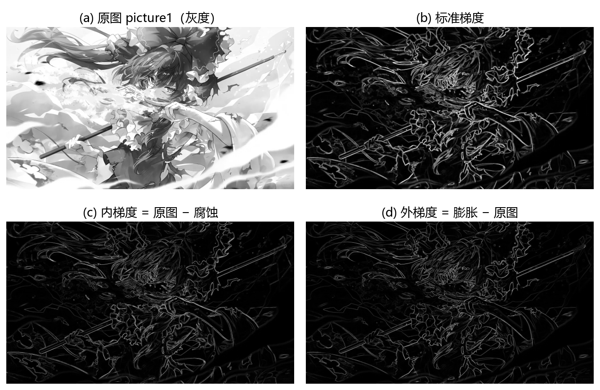
8.7 礼帽运算#
礼帽运算是用原始图像减去其开运算图像的操作。礼帽运算能够获取图像的噪声信息，或者得到比原始图像的边缘更亮的边缘信息。礼帽运算也叫顶帽运算。
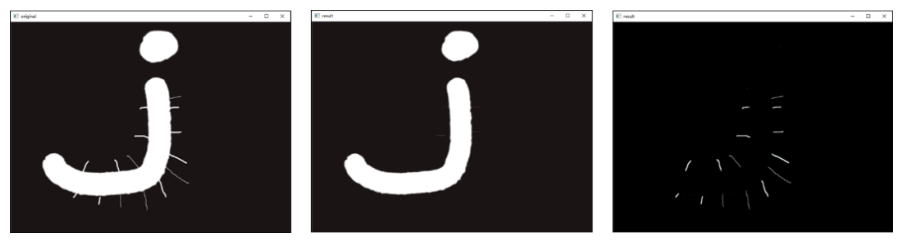
为什么礼帽能提亮斑：开运算会抹掉"小于核的亮结构"。原图减开运算图，没被抹掉的部分相互抵消归零，被抹掉的亮小块原样留下——它们正是比周围亮的噪声或亮斑。
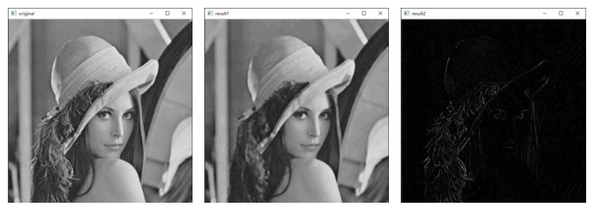
通过将函数 cv2.morphologyEx() 中操作类型参数 op 设置为 cv2.MORPH_TOPHAT，可以实现礼帽运算：
【例 8.10】使用函数 cv2.morphologyEx() 实现礼帽运算。
# ===== 8.7 例 8.10：礼帽运算 =====
import cv2
import numpy as np
o1 = cv2.imread("picture7.png", 0) # 黑底白 J（原书 tophat.bmp）
o2 = cv2.imread("picture1.jpg", 0) # 灰度人像（原书 lena.bmp）
k = np.ones((5, 5), np.uint8) # 5×5 全 1 核
r1 = cv2.morphologyEx(o1, cv2.MORPH_TOPHAT, k) # o1 礼帽：提亮斑
r2 = cv2.morphologyEx(o2, cv2.MORPH_TOPHAT, k) # o2 礼帽：提亮边缘
cv2.imshow("original1", o1)
cv2.imshow("original2", o2)
cv2.imshow("result1", r1)
cv2.imshow("result2", r2)
cv2.waitKey()
cv2.destroyAllWindows()
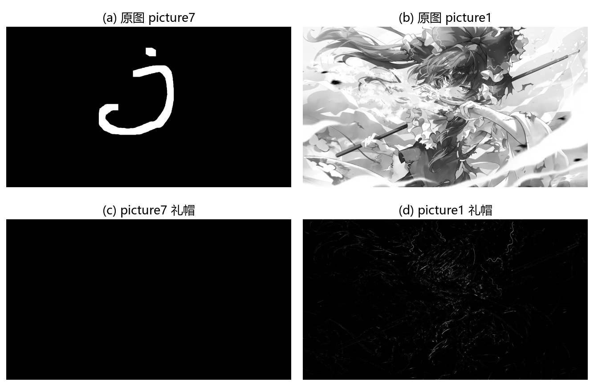
实测验证：灰度 100 的背景上放一块 3×3、灰度 220 的亮斑和一块灰度 30 的暗斑，用 7×7 核做礼帽——亮斑位置输出 \(220-100=120\)，暗斑位置输出 0。礼帽只提取"比周围亮"的结构。
8.8 黑帽运算#
黑帽运算是用闭运算图像减去原始图像的操作。黑帽运算能够获取图像内部的小孔，或前景色中的小黑点，或者得到比原始图像的边缘更暗的边缘部分。
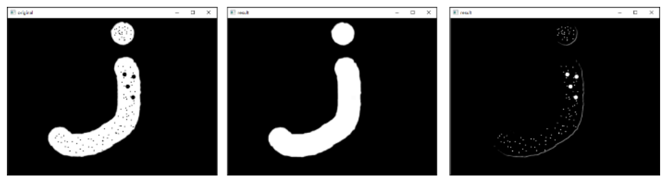
与礼帽对称：闭运算会填掉"小于核的暗结构"。闭运算图减原图，没被填掉的部分相互抵消，被填掉的暗小块原样留下——它们正是比周围暗的小孔或暗斑。
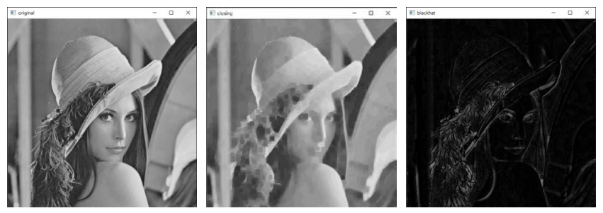
通过将函数 cv2.morphologyEx() 中操作类型参数 op 设置为 cv2.MORPH_BLACKHAT，可以实现黑帽运算：
【例 8.11】使用函数 cv2.morphologyEx() 实现黑帽运算。
# ===== 8.8 例 8.11：黑帽运算 =====
import cv2
import numpy as np
o1 = cv2.imread("picture7.png", 0) # 黑底白 J（原书 blackhat.bmp）
o2 = cv2.imread("picture1.jpg", 0) # 灰度人像（原书 lena.bmp）
k = np.ones((5, 5), np.uint8) # 5×5 全 1 核
r1 = cv2.morphologyEx(o1, cv2.MORPH_BLACKHAT, k) # o1 黑帽：提暗斑
r2 = cv2.morphologyEx(o2, cv2.MORPH_BLACKHAT, k) # o2 黑帽：提暗边缘
cv2.imshow("original1", o1)
cv2.imshow("original2", o2)
cv2.imshow("result1", r1)
cv2.imshow("result2", r2)
cv2.waitKey()
cv2.destroyAllWindows()
实测验证：同样的背景与亮暗斑，黑帽在暗斑位置输出 \(100-30=70\)，亮斑位置输出 0；对素材里的血细胞图（picture11.jpg，亮背景暗斑点）做 15×15 黑帽，暗斑点全部被提出（输出非零且逐像素等于"闭运算 − 原图"）。
8.9 核函数#
进行形态学操作时，必须使用一个特定的核（结构元）。核可以自定义生成，也可以通过函数 cv2.getStructuringElement() 构造——它能构造并返回一个用于形态学处理的结构元素，语法格式为：
该函数返回一个用于形态学操作的指定大小和形状的结构元素。参数含义如下：
- retval：返回的结构元素。
- shape：形状类型，可能的取值见表 8-3。
- ksize：结构元素的大小。
- anchor：结构元素中锚点的位置，默认值 (-1, -1)，即形状的中心。只有十字形的形状与锚点位置紧密相关；其他情况下，锚点位置仅用于形态学运算结果的调整。
表 8-3 形状类型
| 类型 | 说明 |
|---|---|
| cv2.MORPH_RECT | 矩形结构元素，所有元素值都是 1 |
| cv2.MORPH_CROSS | 十字形结构元素，中间一行、中间一列的元素值为 1 |
| cv2.MORPH_ELLIPSE | 椭圆形结构元素 |
原书笔误：MORPH_CROSS 的说明
原书表 8-3 写"十字形结构元素。对角线元素值为 1"。对角线全 1 是 X 形，不是十字；十字形是中间一行、中间一列为 1。例 8.12 自己的输出 kernel2 就是证明。
除了使用该函数，用户也可以自己构建任意二进制掩码作为形态学操作所使用的结构元素。
拓展：自定义核不止这三种
getStructuringElement 只提供三种规则形状；任何 0/1 矩阵（np.uint8）都能直接当核用。例如斜向核 np.array([[1,0,0],[0,1,0],[0,0,1]], np.uint8) 只沿对角线方向起作用。核只看 0 与非 0：非 0 位置参与判定，0 位置被忽略。想要横竖保守、斜向激进之类的效果，自己摆 0 和 1 就行。
【例 8.12】使用函数 cv2.getStructuringElement() 生成不同结构的核。
# ===== 8.9 例 8.12：三种核长什么样 =====
import cv2
kernel1 = cv2.getStructuringElement(cv2.MORPH_RECT, (5, 5)) # 矩形
kernel2 = cv2.getStructuringElement(cv2.MORPH_CROSS, (5, 5)) # 十字形
kernel3 = cv2.getStructuringElement(cv2.MORPH_ELLIPSE, (5, 5)) # 椭圆形
print("kernel1=\n", kernel1)
print("kernel2=\n", kernel2)
print("kernel3=\n", kernel3)
运行程序，结果如下：
kernel1=
[[1 1 1 1 1]
[1 1 1 1 1]
[1 1 1 1 1]
[1 1 1 1 1]
[1 1 1 1 1]]
kernel2=
[[0 0 1 0 0]
[0 0 1 0 0]
[1 1 1 1 1]
[0 0 1 0 0]
[0 0 1 0 0]]
kernel3=
[[0 0 1 0 0]
[1 1 1 1 1]
[1 1 1 1 1]
[1 1 1 1 1]
[0 0 1 0 0]]
矩形核全 1；十字核只有中行中列为 1（再次印证表 8-3 的正确说法）；椭圆核 5×5 时呈"缺四角"的圆形轮廓。实测（cv2 4.13）三种输出与原书逐元素一致。
【例 8.13】编写程序，观察不同的核对形态学操作的影响。
# ===== 8.9 例 8.13：核形状决定膨胀形状 =====
import cv2
o = cv2.imread("picture9.jpg", 0) # 黑底白矩形（原书 kernel.bmp）
kernel1 = cv2.getStructuringElement(cv2.MORPH_RECT, (59, 59)) # 59×59 矩形核
kernel2 = cv2.getStructuringElement(cv2.MORPH_CROSS, (59, 59)) # 59×59 十字核
kernel3 = cv2.getStructuringElement(cv2.MORPH_ELLIPSE, (59, 59)) # 59×59 椭圆核
dst1 = cv2.dilate(o, kernel1) # 矩形核膨胀
dst2 = cv2.dilate(o, kernel2) # 十字核膨胀
dst3 = cv2.dilate(o, kernel3) # 椭圆核膨胀
cv2.imshow("orriginal", o)
cv2.imshow("dst1", dst1)
cv2.imshow("dst2", dst2)
cv2.imshow("dst3", dst3)
cv2.waitKey()
cv2.destroyAllWindows()
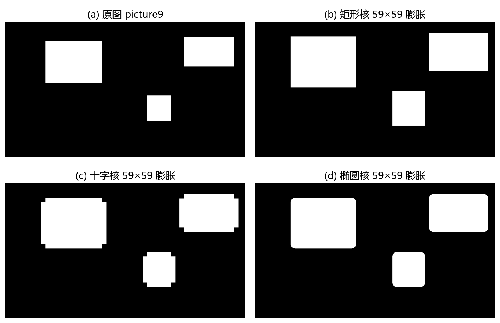
同样是 59×59 的膨胀，形状完全不同：矩形核把边界推出直角；十字核只在横竖四个方向扩张，斜向不动；椭圆核边界圆滑。核的形状就是膨胀（或腐蚀）的"脚印"，选形状等于选边缘风格。
坑与陷阱#
8 个容易踩的坑
- 腐蚀膨胀的判定规则别记反：腐蚀是"核完全落入前景才输出前景色"（全中才亮），膨胀是"核与前景有任意一点重合就输出前景色"（沾边就亮）。记反了，去噪就变成填噪。
- OpenCV 把亮值当前景：黑底白字（前景亮）直接处理；白底黑字要处理的暗物体，得先用
cv2.threshold的THRESH_BINARY_INV取反，否则"腐蚀"收缩的是白色背景而不是黑字。原理见对偶性：\(255 - \text{dilate}(255 - A) = \text{erode}(A)\)。 - 二值图的两副面孔：数学上是 0/1，OpenCV 惯例是 0/255。灰度形态学下腐蚀取邻域最小值、膨胀取最大值，0/1 数组和 0/255 数组的输出值跟着输入值走（输入 1 输出 1，输入 255 输出 255），混着写阈值判断容易出错。
- 核与迭代叠加，效果翻倍：5×5 核迭代 5 次的收缩量远超 5×5 核一次。参数调猛了，前景会被整个吃掉、背景被整个填满。先小核、少迭代试效果，再逐步加。
iterations对开闭运算不是"重复整遍"：morphologyEx(OPEN, iterations=3)是"腐蚀 3 次 + 膨胀 3 次"，约等于换更大的核；而开运算本身是幂等的，重复整个开运算结果不再变化。想更用力，加大核。- 4 通道素材别用 IMREAD_UNCHANGED：
picture7.png、picture9.jpg这类 PNG 是 BGRA 4 通道，IMREAD_UNCHANGED读进来形态学会连 alpha 一起算，结果图带 alpha，后续显示、叠加都容易踩坑。本章统一cv2.imread(path, 0)灰度读入。 - 顶帽黑帽方向别搞反：顶帽 = 原图 − 开运算，提取比周围亮的小结构；黑帽 = 闭运算 − 原图，提取比周围暗的小结构。记反了，提取的正好是要丢掉的。
- HITMISS 限制多：仅支持 CV_8UC1 单通道 8 位图（实测 3 通道直接断言报错）；核里 1、−1、0 三种值语义不同（必须是前景/必须是背景/无所谓），−1 要用
np.int8存，np.uint8装不下负数。
速览#
- 形态学操作用结构元（核）逐像素扫描图像，根据核与前景的重叠关系决定输出像素的值；每次判定的都是与核中心对应的点。
- 腐蚀
cv2.erode(src, kernel)：核完全落入前景输出前景色——前景收缩、毛刺消失、小于核的结构被去除。 - 膨胀
cv2.dilate(src, kernel)：核与前景有任一点重合就输出前景色——前景扩张、断裂连通、空白填补。 - 通用函数
cv2.morphologyEx(src, op, kernel)：op 取 MORPH_ERODE / DILATE / OPEN / CLOSE / GRADIENT / TOPHAT / BLACKHAT / HITMISS，全部由腐蚀膨胀组合而成。 - 开运算 = 先腐蚀后膨胀（\(A \circ B = (A \ominus B) \oplus B\)）：去噪、计数、分离粘连。
- 闭运算 = 先膨胀后腐蚀（\(A \bullet B = (A \oplus B) \ominus B\)）：填内部小孔、去小黑点、连接前景。
- 形态学梯度 = 膨胀图 − 腐蚀图，提取前景边缘；变体内梯度 = 原图 − 腐蚀图，外梯度 = 膨胀图 − 原图。
- 顶帽 = 原图 − 开运算，提取比周围亮的噪声/亮斑/亮边缘；黑帽 = 闭运算 − 原图，提取比周围暗的小孔/暗斑/暗边缘。
- 核三种来源：
np.ones自定义、cv2.getStructuringElement（MORPH_RECT / CROSS / ELLIPSE）、任意 0/1 二进制掩码。 - 关键参数：anchor 默认 (-1,-1) 核中心；iterations 迭代次数（开闭运算下是"腐蚀 i 次 + 膨胀 i 次"）；borderType 边界样式，默认常值 + 魔力边界值（腐蚀按 +∞、膨胀按 −∞）。
术语速查#
| 英文 / 函数 | 中文 | 一句话 |
|---|---|---|
| mathematical morphology | 数学形态学 | 从图像内提取形状分量的理论，形态学操作的总名 |
| structuring element | 结构元（结构元素） | 逐像素扫描图像的小模板，也叫核 |
| kernel | 核 | 同结构元；决定腐蚀膨胀的方向与幅度 |
| erosion | 腐蚀 | 核全中才输出前景，前景向内收缩 |
| dilation | 膨胀 | 核沾边就输出前景，前景向外扩张 |
| foreground / background | 前景 / 背景 | OpenCV 形态学里亮值是前景，暗值是背景 |
| opening | 开运算 | 先腐蚀后膨胀，去噪、计数、分离粘连 |
| closing | 闭运算 | 先膨胀后腐蚀，填孔、去黑点、连接前景 |
| morphological gradient | 形态学梯度 | 膨胀图减腐蚀图，得到前景边缘 |
| internal gradient | 内梯度 | 原图减腐蚀图，贴前景内侧的边缘 |
| external gradient | 外梯度 | 膨胀图减原图，贴前景外侧的边缘 |
| top-hat transform | 顶帽运算（礼帽运算） | 原图减开运算，提取比周围亮的结构 |
| black-hat transform | 黑帽运算 | 闭运算减原图，提取比周围暗的结构 |
| hit-or-miss transform | 击中击不中变换 | 核当前景背景模板做形状匹配，仅 CV_8UC1 |
| anchor | 锚点 | 核内参与"当前像素"判定的位置，默认核中心 |
| iterations | 迭代次数 | 腐蚀/膨胀重复的次数，效果随次数叠加 |
| borderType | 边界样式 | 边界外补什么：常值、复制、镜像、环绕等 |
| borderValue | 边界值 | 常值边界的填充值，默认为魔力边界值 |
| duality | 对偶性 | 腐蚀前景等价于膨胀取反后的背景 |
| idempotence | 幂等性 | 开、闭运算重复执行结果不再变化 |
| cv2.erode | 腐蚀函数 | dst = cv2.erode(src, kernel[, ...]) |
| cv2.dilate | 膨胀函数 | dst = cv2.dilate(src, kernel[, ...]) |
| cv2.morphologyEx | 通用形态学函数 | 用 op 参数切换八种形态学运算 |
| cv2.getStructuringElement | 核构造函数 | 生成矩形、十字、椭圆三种结构元素 |